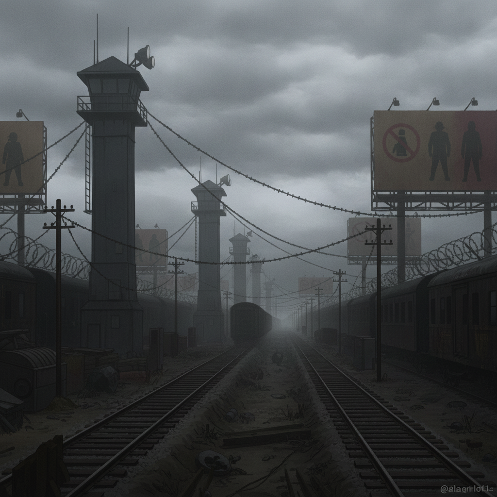

The Hostile Border is a grim, militarized frontier of checkpoint towers and razor-cog wire. Wren's scars mark her instantly here. The roles invert: my college schooling is useless; only Wren's knowledge of the underground keeps us alive.
Her bolt-holes, her forged tokens, her carefully recalled smuggler debts—these are our currency, our shield. We move through the harsh landscape, evading Assayer patrols with Nullifier cuffs, guided by her quiet expertise.
This is her world. I am merely a guest in it.